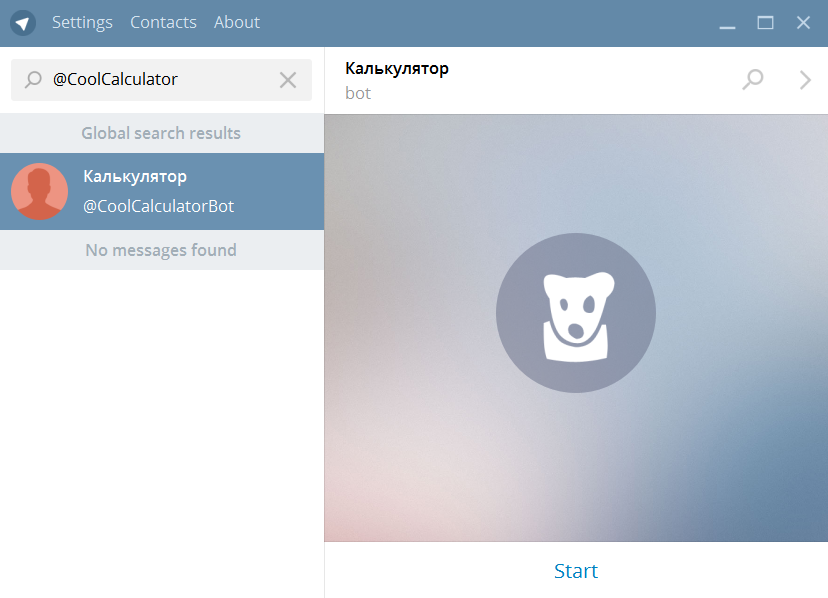
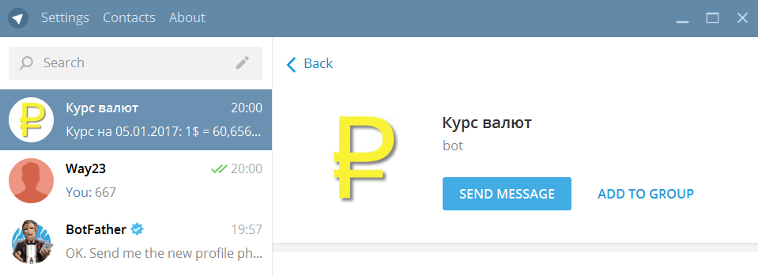

Регистрация бота в Telegram - BotFather
Бот в Telegram - вид аккаунта при создании которого не требуется указывать номер телефона. По сути бот это отдельное приложение которое управляется через чат Telegram. Действия ботов автоматизируются с помощью специального API.
Отличие ботов от пользователей
У ботов нет нет отметки статуса online или времени последнего входа. Вместо этого у них отображается метка "bot".
Бот не может начать разговор с пользователем или вступить в группу. Пользователь должен отправить ему первое сообщение или добавить его в группу.
Имя пользователя у бота оканчивается на "bot", например, @IceMoneyBotopen in new window
Регистрация нового бота
Для управления ботами в Telegram используется специальный бот @BotFatheropen in new window. Его название и аватар намекает на известный фильмopen in new window
Для создания нового бота отправьте команду
/newbot
BotFather предложит ввести название нового бота и имя пользователя для аккаунта бота. Название отображается в окне диалога с ботом, а имя пользователя используется для ссылок на него.

В ответном сообщении приходит токен который нужен для управления ботом через API. Записывать токен не обязательно, всегда можно получить его снова командой
/token
В случае если токен стал известен кому-то ещё кроме вас нужно сгенерировать новый токен командой
/revoke
Старый токен перестанет работать.
Найдем нового бота в поиске

Пока не добавляйте бота в контакты. Как видите в окне описания пусто. Установим текст который будет выводиться в окне добавления бота. Для этого отправьте BotFather команду
/setdescription

Описание отображается в окне с заголовком "What can this bot do?". Текст описания ограничен 512 символами, допустимы переводы строк.
Для изменения описания бота в окне информации о пользователе отправьте BotFather команду
/setabouttext
Текст описания в этом окне ограничен 120 символами. Бот также выдает, что текст не должен содержать переводы строк, но текст с ними нормально принимается.
Если бот уже добавлен в контакты то после команд /setabouttext, /setdescription и /setuserpic описание в клиенте обновляется не сразу. Помогает перезапустить клиент, или удалить разговор с ботом и снова его добавить.
Самая заметная часть описания - аватар. Для его изменений введите команду BotFather
/setuserpic
После её ввода отправьте BotFather изображение которое станет аватаром бота. Аватар используется в двух местах - в описании пользователя и в изображении в списке контактов. Причем в контактах изображение обрезается в форме круга.

Имя созданного бота изменяется командой
/setname
Если же бот больше не нужен то команда удаления бота
/deletebot
Последняя, в этом списке, команда - редактирование списка команд бота
/setcommands
Например отправляем такое описание
help - Описание функций yesterday - Вчерашний курс
И получаем подсказку при вводе символа "/"
Команды в этом списке - это подсказка для пользователя. Сам бот может обрабатывать любые команды, независимо от того что в списке.